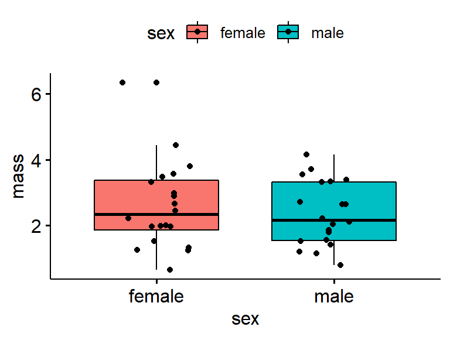
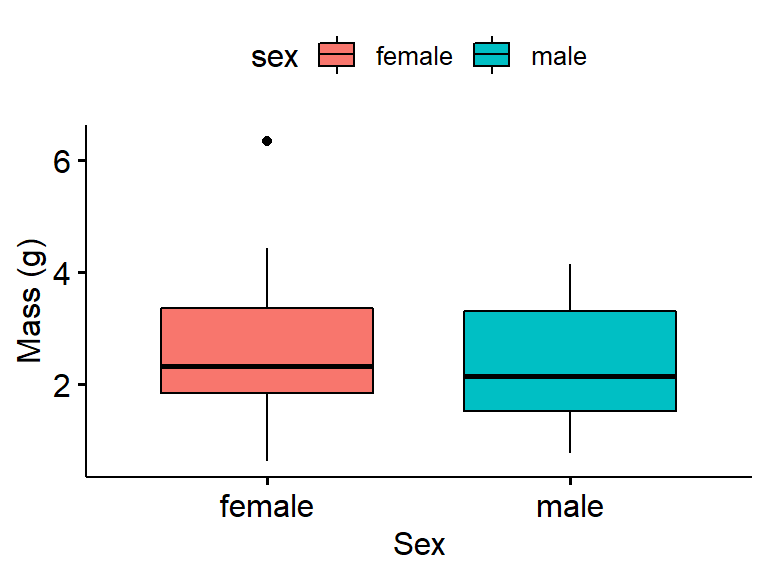

Chapter 17 Data analysis case study part I: summary statistics
17.1 Preliminaries
17.1.1 Load packages
You might have to install or re-install wildlifeR using install.packages()
library(devtools)
install_github("brouwern/wildlifeR")17.1.2 Load data
data(frogarms)17.1.3 Subset your data
The function make_my_data2L() will extact out a random subset of the data. Change “my.code” to your school email address, minus the “(???)” or whatever your affiliation is.
my.frogs <- frogarms
# my.frogs <- make_my_data2L(dat = frogarms,
# my.code = "nlb24", # <= change this!
# cat.var = "sex",
# n.sample = 20,
# with.rep = FALSE)n.sample is set to 20. This is set up to extract 20 unique individuals of each sex. Check that you dataframe is 2*20 = 40 rows using the dim() command.
dim(my.frogs)17.2 A 1st encounter with R: getting to know your data
dim(my.frogs)
nrow(my.frogs)
ncol(my.frogs)head(my.frogs)
tail(my.frogs)names(my.frogs)?my.frogs17.3 A 1st encounter with R: summary statistics
R is a giant calcualter
17.3.1 Overall summary
Whole dataframe
summary(my.frogs)Just a single column
summary(my.frogs$mass)Can compare your subset to the original data
summary(my.frogs$mass)
summary(frogarms$mass)Handy trick: stack up the data with rbind()
rbind(summary(my.frogs$mass),
summary(frogarms$mass))17.3.2 Individual summary stats
mean(my.frogs$mass)var(my.frogs$mass)- median()
- min()
- max()
- var()
- sd()
- range()
- nrow() or length() (for sample size)
range() returns two values in a vector
range(my.frogs$mass)Note that R doesn’t return a very common statistic, the standard error (SE). This can be calcualted by hand.
sd(my.frogs$mass)/sqrt(length(my.frogs$mass))Write a function
my_sd1 <- function(dat_column){
sd(dat_column)/sqrt(length(dat_column))
}
my_sd2 <- function(dat, column){
sd(dat[,column])/sqrt(length(dat[,column]))
}
my_sd3 <- function(dat, column, digits.round = 3){
se <- sd(dat[,column])/sqrt(length(dat[,column]))
round(se, digits = digits.round)
}my_sd2(dat = my.frogs, column = "mass")17.4 A 1st encounter with dplyr
dplyr is a package that provides numerous functions for manipulating data. We will use two handy functions
- summarize() / summarise()
- group_by()
dplyr can use a handy sytax that involes “pipes”. You can string together R commands using the function %>%
When using pipes, you start with a dataframe and follow it with an action you want done to it. So, for example, previously when we wanted the mean of the mass column we did this
mean(my.frogs$mass)Which is kind of read like a normal mathematical equation or function, where you start from inside the parentheses and work out. R let’s you nest as many functions as you wnat. If i want to round my mean is wrap “mean(my.frogs$mass)” in round(…)
round(mean(my.frogs$mass))Using pipes to get the mean I write things more like a sentence:
my.frogs$mass %>% mean() #note parentheses.Which reads kind of like “Take the mass column and the datagrame and apply the mean() function to it.” Note that the parentheses have to be included even though there is nothing in them.
To round the mean we would do this
my.frogs$mass %>% mean() %>% round()Which read left to right like a sentence is “Take the mass column, calcualte the mean and then rond it.”
Note that the rond() command has an arguement for how many digits you want to round to. You include that in the parantehes
my.frogs$mass %>% mean() %>% round(digits = 2)17.4.0.1 dplyr’s summarize() commnad
INstead of mean(data$column) we can use summarise()/summarize() and pipes Grand mean of mass
my.frogs %>% summarise(mean(mass))this is maybe more complicated than “mean(my.frogs$mass)” but overall the pipe framework and summarise pays off when combined with group_b()
17.5 group_by
For some more info on group_by see
https://www.r-bloggers.com/using-r-quickly-calculating-summary-statistics-with-dplyr/ https://www3.nd.edu/~steve/computing_with_data/24_dplyr/dplyr.html http://www.datacarpentry.org/R-genomics/04-dplyr.html
We can use group_by() to slit things up by a categorical variable. Here, we can say “take my.frogs, split up the data by the sex column, and apply the mean function to each subset.”
my.frogs %>%
group_by(sex) %>%
summarise(mean(mass))note that the column heading in is mean(mass), which is what is in summarise().
A handy thing about sumarise is you can pass it lables. Mean mass by sex w/ label
my.frogs %>%
group_by(sex) %>%
summarise(mass.mean = mean(mass))You can lable thigns anything, eg “puppies”.
my.frogs %>%
group_by(sex) %>%
summarise(puppies = mean(mass))You can pass any summari function to summarise. We can give it sd to get the sd of mass by sex.
my.frogs %>%
group_by(sex) %>%
summarise(mass.sd = sd(mass))What makes dplyr::group_by and summarize() really powerful is that you can pass it multiple summary functions at the same time
my.frogs %>%
group_by(sex) %>%
summarise(mass.mean = mean(mass),
mass.sd = sd(mass))dplyr has a handy function n() for getting your sample size.
my.frogs %>%
group_by(sex) %>%
summarise(mass.mean = mean(mass),
mass.sd = sd(mass),
n = n())| Pass it a novel function |
r my.frogs %>% group_by(sex) %>% summarise(mass.mean = my_sd1(mass)) |
## Alternatives
### doBy::summaryBy The doBy package has a nice syntax. I don’t really see manhy people use it
library(doBy)
summaryBy(mass ~ sex,data = my.frogs, FUN = mean)
summaryBy(mass ~ sex,data = my.frogs, FUN = c(mean,sd))17.5.1 tapply()
tapply is pretty old school
tapply(X = my.frogs$mass,INDEX = my.frogs$sex, FUN = mean)17.5.2 reshape2::dcast
What I’ve used most of my career thus far. Am slowly switch to dplyr.
library(reshape2)
dcast(data = my.frogs,
formula = sex ~ .,
value.var = "mass",
fun.aggregate = mean)17.6 Data analysis case study part II: plotting your data
17.6.1 Preliminaries
library(devtools)
install_github("brouwern/wildlifeR")17.6.1.1 Load packagtes
library(wildlifeR)
library(ggplot2)
library(cowplot)
library(ggpubr)
library(dplyr)17.6.1.2 Load data
data(frogarms)17.6.1.3 Subset your data
The function make_my_data2L() will extact out a random subset of the data. Change “my.code” to your school email address, minus the “(???)” or whatever your affiliation is.
my.frogs <- make_my_data2L(dat = frogarms,
my.code = "nlb24", # <= change this!
cat.var = "sex",
n.sample = 20,
with.rep = FALSE)17.6.2 Boxplots
Basic boxplot
ggboxplot(data = my.frogs,
y = "mass",
x = "sex")
Notched boxplot.
We’ll use the original frogarms dataframe first for this THese aren’t commonly used; the notches work kind of like confidence intervals to determine if medians are different.
ggboxplot(data = frogarms,
y = "mass",
x = "sex",
notch = TRUE)
Now try your own subset of the data. The Notch calculations likely get messed up with small samples sizes)
ggboxplot(data = my.frogs,
y = "mass",
x = "sex",
notch = TRUE)
Add colored fill; note that it is “fill” not “color”. Color changes the color of the lines
ggboxplot(data = my.frogs,
y = "mass",
x = "sex",
notch = TRUE,
fill = "sex")We can turn off the notchign by adding a “#” character before it. This is called “commenting out”
ggboxplot(data = my.frogs,
y = "mass",
x = "sex",
#notch = TRUE,
fill = "sex")
Add raw data. This works best with small datasts
ggboxplot(data = my.frogs,
y = "mass",
x = "sex",
#notch = TRUE,
fill = "sex",
add = "point")
Jiter raw data This can be helpfu, though ggpubr::ggboxplot doesn’t allow much control over the “jittering”. Jittering helpful when you have large datsets and want to avoid overlap in the points.
ggboxplot(data = my.frogs,
y = "mass",
x = "sex",
#notch = TRUE,
fill = "sex",
add = "jitter")
Label axes
ggboxplot(data = my.frogs,
y = "mass",
x = "sex",
notch = TRUE,
fill = "sex",
add = "jitter",
xlab = "Sex", #x axis (horizontal)
ylab = "Mass (g)") #y axis (vertical)
Add title not usually done for publication but useful for keeping track of things and for presentations
ggboxplot(data = my.frogs,
y = "mass",
x = "sex",
notch = TRUE,
fill = "sex",
add = "jitter",
xlab = "Sex",
ylab = "Mass (g)",
main = "Mass of Australian frogs by sex") #Main title
Move legend to bottom
ggboxplot(data = my.frogs,
y = "mass",
x = "sex",
notch = TRUE,
fill = "sex",
add = "jitter",
xlab = "Sex",
ylab = "Mass (g)",
main = "Mass of frogs by sex",
legend = "bottom")
Change color pallete
ggboxplot(data = my.frogs,
y = "mass",
x = "sex",
# notch = TRUE,
fill = "sex",
add = "jitter",
xlab = "Sex",
ylab = "Mass (g)",
main = "Mass of frogs by sex",
legend = "bottom",
palette = c("green","blue"))
17.6.2.1 Plotting multple plots with cowplot::plot_grid
We can save a plot to an R object
gg.my.frogs <- ggboxplot(data = my.frogs,
y = "mass",
x = "sex")Call just the object (eg, just type it into the console. or highlight jsut the word)
gg.my.frogsMake an object using the frogarms data
gg.frogarms <- ggboxplot(data = frogarms, #use original data
y = "mass",
x = "sex")Now plot both
plot_grid(gg.my.frogs,
gg.frogarms)
Add labels. Note that alignment is off sometimes.
plot_grid(gg.my.frogs,
gg.frogarms,
labels = c("a)My fogs","b)All the frogs"))
17.6.3 Plot means with error bars
Super hand function ggerrorplot() Default is mean +/- 1 standard error
ggerrorplot(data = my.frogs,
y = "mass",
x = "sex")Mean and se; note sd is not often used in publications
ggerrorplot(data = my.frogs,
y = "mass",
x = "sex",
desc_stat = "mean_sd")
Mean and 95% confidence interval
ggerrorplot(data = my.frogs,
y = "mass",
x = "sex",
desc_stat = "mean_ci")Plot your data and original data
#your data
gg.my.frogs <- ggerrorplot(data = my.frogs,
y = "mass",
x = "sex",
desc_stat = "mean_ci")
#all of the data
gg.all.frogs <- ggerrorplot(data = frogarms, #change data
y = "mass",
x = "sex",
desc_stat = "mean_ci")
plot_grid(gg.my.frogs, gg.all.frogs)
Set colors
ggerrorplot(data = my.frogs,
y = "mass",
x = "sex",
desc_stat = "mean_ci",
color = "sex")
Add raw data. kinda crazy
ggerrorplot(data = my.frogs,
y = "mass",
x = "sex",
desc_stat = "mean_ci",
color = "sex",
shape = "sex",
add = "point")
Jitter raw data. even crazier
ggerrorplot(data = my.frogs,
y = "mass",
x = "sex",
desc_stat = "mean_ci",
color = "sex",
add = "jitter")
Back to just the means Increase size
ggerrorplot(data = my.frogs,
y = "mass",
x = "sex",
desc_stat = "mean_ci",
color = "sex",
size = 1.5) #
Move legend to the bottom
?set all of this stuff as eval = F and have students figur eout how to add it? m aybe not - goal is just to do “1st encounter”
ggerrorplot(data = my.frogs,
y = "mass",
x = "sex",
desc_stat = "mean_ci",
color = "sex",
size = 1.5,
xlab = "Sex",
ylab = "Mass (g)",
legend = "bottom") #
17.7 arms
ggerrorplot(data = frogarms,
y = "arm",
x = "sex",
desc_stat = "mean_ci",
color = "sex",
size = 1.5,
xlab = "Sex",
ylab = "Mass (g)",
legend = "bottom") #